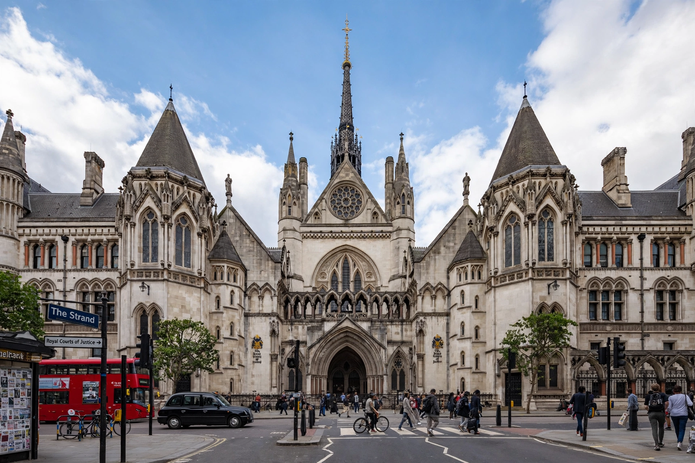

Wikipedia > Judicature Acts
Judicature Acts

The Judicature Acts are a series of United Kingdom statutes, principally the Supreme Court of Judicature Act 1873 and the Supreme Court of Judicature Act 1875, which restructured the courts of England and Wales. They abolished the historic superior courts — the courts of Queen's Bench, Common Pleas and Exchequer, the Court of Chancery, and the courts of probate, divorce and admiralty — and replaced them with a single Supreme Court of Judicature, comprising the High Court of Justice and the Court of Appeal.
Background
By the nineteenth century the English court system was an accumulation of overlapping jurisdictions. A litigant might have to sue at common law for damages and in Chancery for an injunction in the same dispute; the common law courts could not apply equity and Chancery could not award common law damages (defects only partly cured by mid-century reforms). Royal commissions from 1867 onwards recommended fusion of administration. The 1873 Act, passed under Gladstone's government with Lord Selborne as Lord Chancellor, was amended and brought into force on 1 November 1875 by the 1875 Act of Disraeli's administration, which also resolved controversy over the abolition of appeals to the House of Lords (retained the following year by the Appellate Jurisdiction Act 1876).
Effect
All the new divisions of the High Court could administer both law and equity; where the rules of equity and common law conflicted, equity was to prevail. Procedure was unified under a single code, and a general right of appeal on fact and law was created to the Court of Appeal. The reformers described the change as a fusion of administration, not of the substantive bodies of law: the famous scholarly metaphor, attributed to Ashburner, is that the two streams of law and equity, though running in one channel, do not mingle their waters — a position disputed by "fusionist" lawyers, especially in Australia.
Influence
The Acts became the model for court reforms across the British Empire and Commonwealth, and their structure — a Supreme Court with a High Court (including a Chancery Division) and a Court of Appeal — persisted in England and Wales, with modifications, into the present Senior Courts.
See also: Court of Chancery · Equity (law) · High Court of Justice · Court of Appeal (England and Wales)